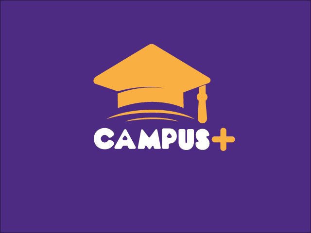
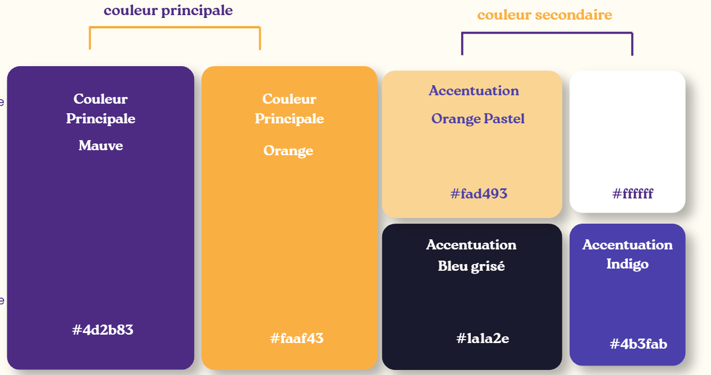
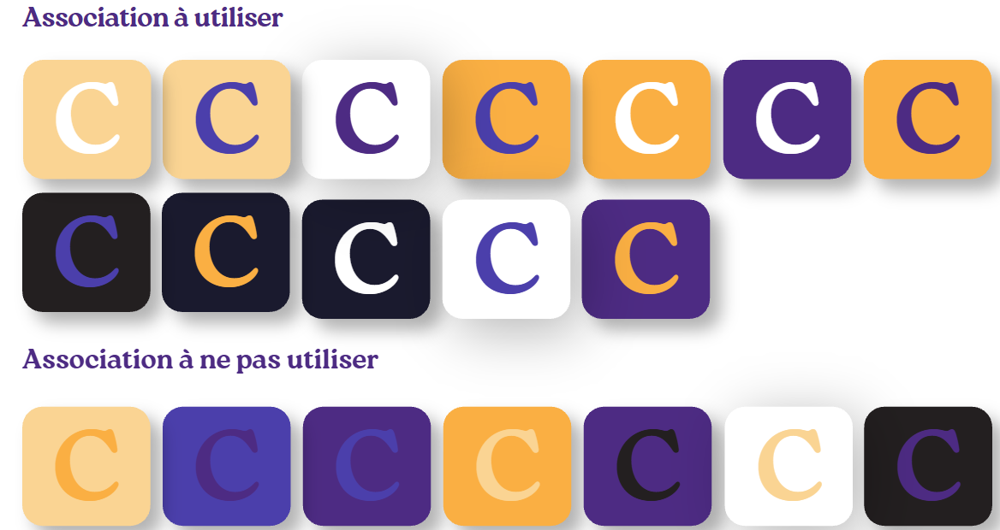
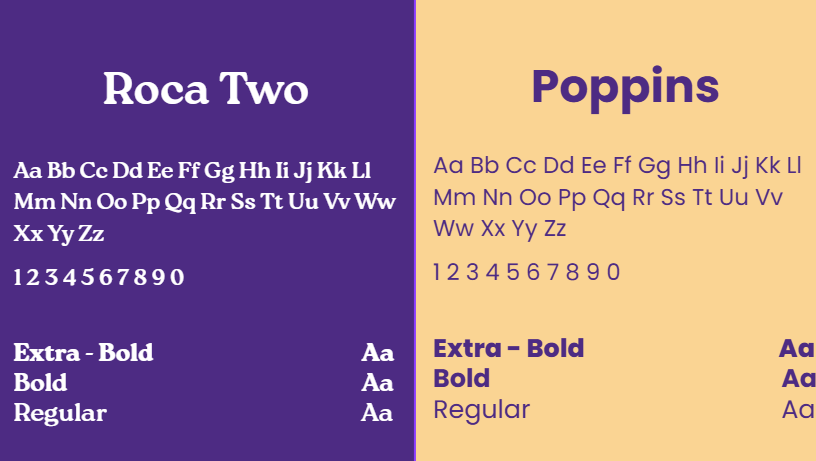
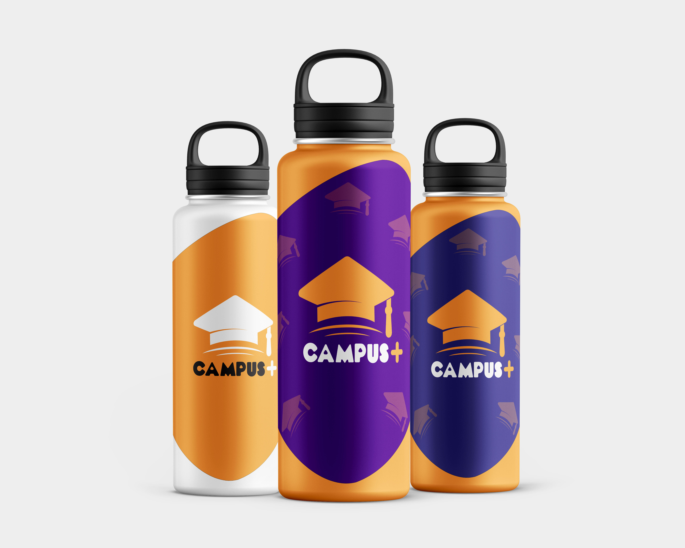

Identité Graphique — Campus+
Dans le cadre de la SAE 401, j'ai réalisé la charte graphique de Campus+, un projet d'identité visuelle destiné à une plateforme numérique dédiée à l'univers étudiant. L'objectif était de créer une identité reconnaissable, moderne et dynamique, en accord avec les valeurs du monde académique. J'ai travaillé sur la création du logotype, le choix des couleurs, les typographies, les iconographies ainsi que les différentes déclinaisons graphiques sur supports numériques et physiques. Ce projet m'a permis de développer mes compétences en création graphique et en conception d'identité visuelle.
01. Identité Visuelle — Campus+
Création du logotype Campus+ et exploration de ses différentes déclinaisons. L'identité repose sur un chapeau de diplômé associé au nom Campus+, afin d'ancrer visuellement la marque dans l'univers académique et étudiant.



02. Gamme Colorée et Typographies
La palette chromatique repose sur deux couleurs principales : un violet profond (#4d2b83) et un orange chaleureux (#faaf43). Cette association permet de créer un contraste entre sérieux et dynamisme. Pour la typographie, Roca Two est utilisée pour les titres et Poppins pour les textes, afin de garantir une hiérarchie visuelle claire et une bonne lisibilité.

Palette chromatique — Violet et orange

Combinaisons et associations de couleurs

Typographies — Roca Two et Poppins
03. Mises en Situation — Supports Physiques
Déclinaison de l'identité graphique Campus+ sur différents supports physiques et objets promotionnels. Cette partie présente plusieurs mises en situation permettant de visualiser l'application de la charte graphique sur des produits du quotidien.

Goodies et objets promotionnels

Tote bag — Identité graphique Campus+

Mug — Déclinaison de la marque